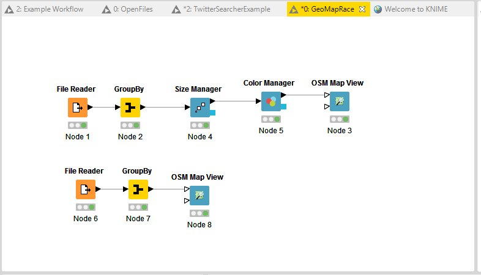

This week
- Go over assignment 2
- Install and set-up Google Drive
- Install (more) Extensions for KNIME
- Look at new KNIME examples
- Markdown
`
- Learn about numpy
- Simple statistics (Python + KNIME)
Google Drive Organization
- Google drive is in your home directory (Windows)
- Something like c:\users\yourname\Google Drive\
- c:\users\bnorthan (for me)
- shared class folder c:\users\yourname\Google Drive\2016 Q1 Spring\
- create personal class folder c:\users\yourname\Google Drive\MyINF428\
- shared class folder - will be automatically updated
- Can copy material to your personal class folder
- Then can run and modify
- Without disrupting others
Can share assignments with me
- data
- KNIME
- notebooks
- Week1, Week2, Week3....
- Start KNIME...
- Twitter example??
- Geomaps example??
- Start Jupyter notebook
KNIME extensions
- Go to File->Install KNIME Extensions
- Search for then install KNIME social media
- Search for then install "textprocessing"
- Search for then install "KNIME Open Street Map"
Open Street Map Example

|
Python
- General purpose, high level
- Easy to learn but powerful
- Can run in an interactive shell
- Can run scripts
- Can run programs made of modules and classes
Extended with modules and packages
Markdown
- Ipython has 'code' and 'markdown' cells
- Markdown cells are used for documentaion
- Markdown specifies how text should be displayed
- Markdown Cheat Sheet